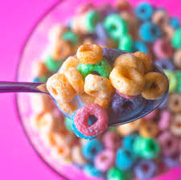

Cereal is a processed grain product that is typically eaten for breakfast. It can be made from a variety of grains, including corn, wheat, rice, and oats. Cereals can be ready-to-eat or require cooking